眼见不再为实
大一上实践作业作品
一、调查背景与意义
1、调查背景：AI谣言已进入工业化生产阶段
2026年是“十五五”规划开局之年，人工智能已成为培育和发展新质生产力的重要引擎。据《生成式人工智能应用发展报告（2025）》，截至2025年6月，我国生成式人工智能用户规模达5.15亿人、普及率36.5%[1]。问题也随之而来。AI让谣言生产进入“工业化”阶段。2026年6月，中国网信网通报了“张家界大峡谷玻璃桥坍塌”“某企业车间爆炸”等多起利用AI工具编造的谣言案[2]，“8家新能源车企因锁电被约谈”“个人存款计结息新规”等AI谣言，与2024年的“民警离职潮”谣言一样，都曾广泛流传，后均被官方证伪或由公安机关查处。中国互联网联合辟谣平台指出，AI谣言已“以近乎工业化生产的模式泛滥”，形成一条谣言被AI引用、再生出更多谣言的链条[3]。AI谣言之所以比传统谣言更难防，根源在于它伪造的正是“眼见为实”的信任基础。造谣只需几分钟，辟谣却要数小时乃至数天，而算法又天然放大情绪化内容，形成“越离谱越传播”的逆向筛选。这类事情不只发生在中国，据公开报道，2023年斯洛伐克议会选举、2024年美国大选期间都出现过伪造政要的音频与合成图像。
更具直接危害性的是深度伪造诈骗。2023年4月，福州一企业主在与“好友”的视频通话中，因对方“露脸”确认身份而放松警惕，10分钟内被AI换脸技术伪装的“好友”骗走430万元[4]。从技术原理看，现阶段的换脸拟声已能做到面部贴合、口型同步与音色克隆，仅凭肉眼与耳朵越来越难分辨真伪，防范重点必须从“看出破绽”转向“流程核验”。身份要靠多渠道确认，而不能只信“亲眼所见”。面对这一态势，监管规则陆续落地（见图1）。四部门《人工智能生成合成内容标识办法》自2025年9月1日起施行[5]，要求AI生成内容添加显式或隐式标识，配套强制性国家标准同步实施；“清朗”系列专项行动持续整治AI应用乱象；新修订《治安管理处罚法》自2026年1月1日起施行，其第二十九条对故意散布谣言者规定了拘留或者罚款处罚[6]；《刑法》第二百九十一条之一则对编造、故意传播虚假信息罪作出规定[7]。标识与溯源并不妨碍技术发展，它只是把责任划清。用AI生成的内容要说清楚，造了假要担责任。
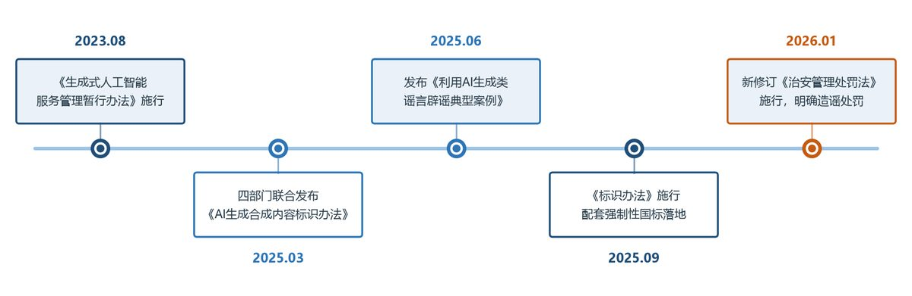
2、调查意义：回应第五章网络文明自律的课程要求
课程实践作业结合《思想道德与法治》第五章教学内容，要求我们加强网络文明自律、形成正确网德观，提升甄别虚假信息的能力。本次调查即对应“遵守道德准则，做崇德尚礼人”模块中“提升甄别虚假信息、立场错误信息的能力”一项，以调研报告形式呈现。笔者所在高校以电子信息为特色，学生兼具“高频AI用户”与“未来数字产业建设者”的双重身份。
2024年北京大学的一项调查显示，该校学生中94.1%使用过生成式AI工具[8]；2025年中国青年报调查（中国青年网转载）显示47.1%的受访大学生表示“离不开AI”[9]。“眼见为实”的认知习惯跟不上技术演进，今天的大学生面对的信息环境，比上一代人复杂得多。对在校大学生做这次调查，首先是落实课程要求。其次是借调查过程让受访者自己过一遍——这条信息我为什么信？结果也能给学校后续的媒介素养教育留一份参照。问卷除了测能力，也问态度。大学生怎么看自己在信息传播里的角色，以及对平台、学校、法律各有什么期待。这些回答本身就是德育材料，能让人看清自己在“信息茧房”与“流量漩涡”里的位置。调查的问卷与题库，也可以直接拿给后续同类课程用。大学生在网络生态里还有一层放大效应：他们是内容的高频消费者，过几年又会成为内容生产者和平台建设者，信息习惯正处在定型期，此时介入，长期回报最高。
学界对这一问题已有积累，大致分两条线。一条测量能力：已有针对安徽省高校学生的调查显示，大学生AI工具使用率已达九成以上，但对生成内容的真伪判断并不因使用频繁而自然提高[10]，该结论不宜外推到其他样本。另一条讨论教育：研究者认为，AIGC把信息素养的重心从“检索与获取”推向“评估与验证”，批判性信息素养应成为核心内容[11]。两条线的共同前提是，自评不能替代实测，这恰是既有调查的薄弱处。多数量表测的是“你觉得自己会不会”，缺少可核对的判断成绩。
本次调查在三点上与此不同。一是方法：把八条真假新闻直接嵌入问卷，以判断正确率而非自评分数衡量能力。二是口径：按方向把误判分为“把假当真”的受骗型与“把真当假”的多疑型，二者风险指向相反，合并统计会互相抵消。三是归因：检验判断依据与正确率的关联，把“为什么判错”从能力高低推进到方法有无。这三条构成本报告的增量，也决定了后文对策的落点。
二、调查设计与实施
1、调查对象与抽样：经课程群与互填渠道扩散的在校大学生样本
调查以在校大学生为对象，由本小组在笔者所在高校《思想道德与法治》课程2026年实践周中发起。受实践周时长与跨校入校条件的限制，问卷采用线上便利抽样与滚雪球方式发放。通过问卷星“互填问卷”渠道高校学生扩散。最终回收问卷102份，全部纳入分析，覆盖26个省级行政区，其中广东20份（19.61%）、江苏与山东各8份（7.84%）、河南与河北各6份（5.88%），浙江4份（3.92%）。这一分布意味着样本更接近“全国在校大学生便利样本”，而不是任何一所高校的学生总体。报告因此不再以“本校学生”作为分析单位，凡涉及学校层面的推论，均按在校大学生的一般情况表述，代表性局限在第六节集中说明。问卷匿名填写，测试素材一律出自公开辟谣或官方通报的事件，填答本身也算一次媒介素养的提醒。纳入标准为作答完整、辨识测试未全部选择“不确定”；按此标准，102份问卷均符合条件。
2、调查方法：问卷内嵌八条真假辨识测试
方法上以文献研究和问卷调查为主，开放题文本作补充。自编问卷共29题。Q27一题含8项治理态度陈述，Q15—Q22为8条真假辨识素材，Q23单列判断依据题。素材中4条真实、4条已被辟谣或查处，题材大致匹配，也刻意避开了校园里流传最广的那几个辟谣事件。每条判断正确记1分（总分0—8分），“不确定”视为弃权不计分，按强制二选一的50%基线作参照。若按“真实、虚假、不确定”三选一随机猜测，基线应为1/3。分析时把“把假当真”（轻信型误判）与“把真当假”（多疑型误判）分开统计，前者反映受骗风险，后者反映信任损耗，政策含义并不相同。真实条目全部来自权威渠道可查证的报道，虚假条目取自官方已辟谣或查处的案例。命题时让两类条目的句式与信息密度尽量接近，免得上手就能看出风格差别，参考答案页逐条标注来源供核查。问卷定稿后对选择题设置必答校验，开放题不作强制，并记录作答时长。第29题为开放性建议题，文本按主题归类后与量化结果对照，用来补选项题问不出来的具体诉求。
3、问卷维度设计：六维度加开放建议，共29题
问卷维度设计见表1；本章的研究框架（研究方法、测量维度与研究输出）见图2。从使用的工具与频率、虚假信息的接触频率，到辨识测试的实测得分、信心自评与治理态度，六组题目串成一条从“用过”到“能不能辨”的链条，末行另记核查时间与开放建议，其中辨识测试直接产生客观得分，是全卷核心。
| 维度 | 题号 | 测量内容 | 题型 |
|---|---|---|---|
| 基本情况 | Q1—Q4 | 年级、专业、性别、上网时长 | 单选 |
| 渠道与工具 | Q5—Q9 | 新闻渠道、工具与频率、用途、发布 | 多选/单选 |
| 虚假信息接触 | Q10—Q14 | 遭遇、误转、诈骗、类型与核查做法 | 单选/多选 |
| 真假辨识 | Q15—Q23 | 8条真假新闻判断及依据 | 单选+多选 |
| 自我评估 | Q24—Q26 | 自评能力、同伴比较、信心 | 单选/量表 |
| 治理态度 | Q27 | 8项治理陈述的态度 | 李克特五级量表 |
| 核实与建议 | Q28—Q29 | 每周核实时间、对学校建议 | 填空/开放 |
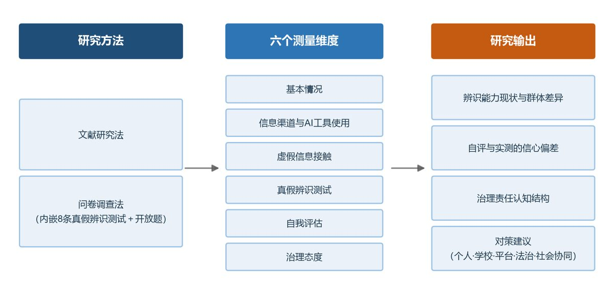
4、实施进度：与课程实践周同步推进
调查与课程实践周（10月26日—11月6日）同步推进：前期完成案例收集、问卷设计与命题校对；10月28日起通过课程群与互填渠道发放，数日内回收完毕；随后进行数据清洗、统计分析与报告撰写。问卷末题设开放性建议，与选项题同步回收，也让质性材料与量化数据出自同一批受访者，可以直接对照。
三、调查结果与分析
1、总体发现：AI工具几乎普及，辨识测试接近二选一随机水平
主要发现可先由图3概括：AI工具使用率达99.02%，辨识测试正确率仅48.41%，两者口径不同，不作直接相减；本调查最突出的信号，是高使用与低辨识并存，以及自评信心明显高于实测水平。
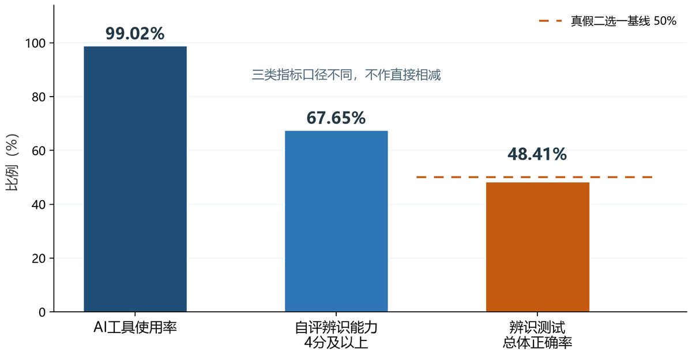
2、样本构成：大一偏少，专业集中于理工与经管
本次调查回收问卷102份。年级上大二、大三与大四及以上各占三成，大一仅4人；专业以其他理工类与经管类为主，设计艺术类仅4人；女生略多于男生；上网集中在2—8小时（见表2与图4）。样本来自26个省级行政区，广东20份、浙江仅4份。这是滚雪球发放的结果，也提示样本不能代表任何单一学校的生源结构。
| 维度 | 类别 | 人数 | 占比 |
|---|---|---|---|
| 年级 | 大一 | 4 | 3.92% |
| 年级 | 大二 | 33 | 32.35% |
| 年级 | 大三 | 31 | 30.39% |
| 年级 | 大四及以上 | 34 | 33.33% |
| 专业类别 | 电子信息类 | 17 | 16.67% |
| 专业类别 | 其他理工类 | 36 | 35.29% |
| 专业类别 | 经管类 | 30 | 29.41% |
| 专业类别 | 人文社科类 | 15 | 14.71% |
| 专业类别 | 设计艺术类 | 4 | 3.92% |
| 性别 | 男 | 44 | 43.14% |
| 性别 | 女 | 58 | 56.86% |
| 日均上网时长 | 2小时以内 | 7 | 6.86% |
| 日均上网时长 | 2—5小时 | 43 | 42.16% |
| 日均上网时长 | 5—8小时 | 43 | 42.16% |
| 日均上网时长 | 8小时以上 | 9 | 8.82% |
| 合计 | — | 102 | 100.00% |
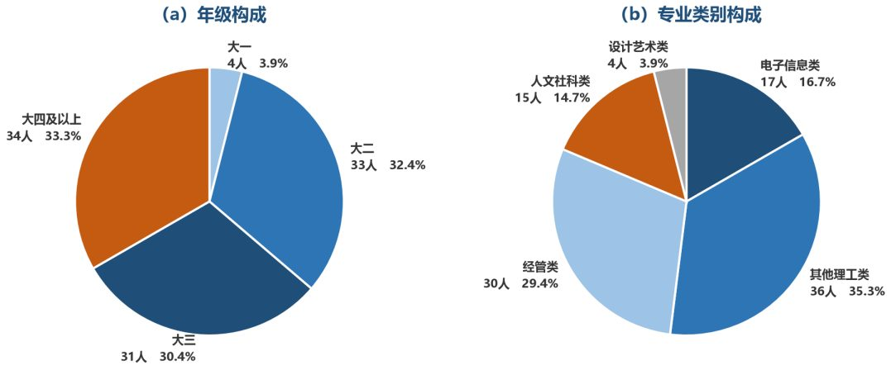
3、AI工具使用与信息接触：99.02%用过，近八成遇过假信息
受访者AI工具使用率达99.02%，工具以国产大模型为主，豆包与DeepSeek使用最广。67.65%的受访者每周数次及以上使用，其中31人几乎每天使用（见图5）。用途以查资料、翻译、写作润色为主，生成图片、音视频次之（见图6）。九成受访者曾用AI生成内容并发布到网上，可见“用过”已是常态，缺的不是接触机会，而是判断训练。
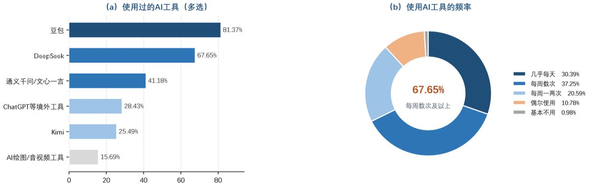
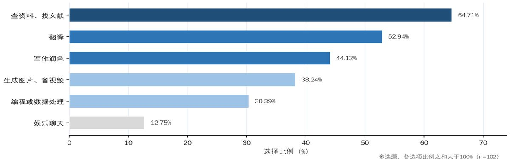
虚假信息的接触与风险经历见图7：经常或偶尔遇到者接近八成，52.94%有过误转经历，41.18%本人或身边遭遇过AI换脸、拟声类诈骗。
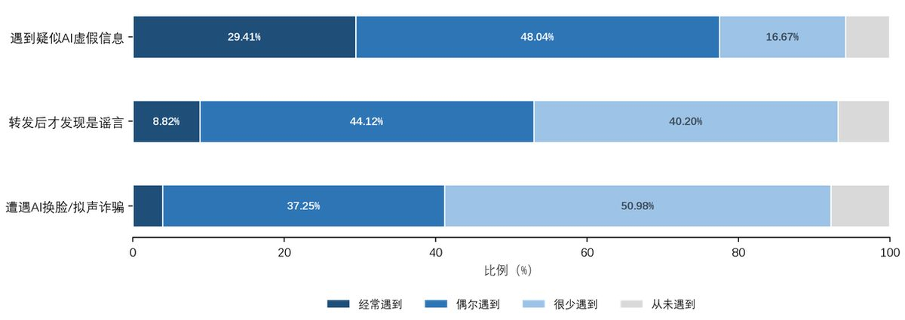
4、辨识测试结果：总体正确率48.41%，接近二选一随机水平
辨识测试的总体正确率为48.41%，与在真、假之间二选一猜测的50%基线只差1.59个百分点，不能据此认定低于随机水平；虚假条目正确率（46.32%）略低于真实条目（50.49%），近三成的判断选择了“不确定”。若按816次独立判断作近似检验，双侧p约0.38；同一受访者答8题并不独立，实际不确定性只会更大。按通行判断标准，在强制二选一、把“不确定”视为弃权的前提下，p>0.05即没有统计学证据表明正确率与50%基线存在实质差别，1.59个百分点的落差更可能来自抽样波动。分条目结果见图8：《人工智能生成合成内容标识办法》施行一条识别最好，个人存款计结息“新规”与8家车企“锁电”被约谈两条最差，也是“不确定”最多的条目。
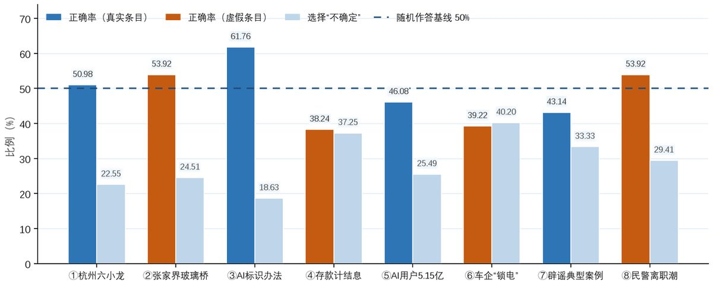
误判结构上，真实条目被判为虚假的有100次（24.51%），多于虚假条目被判为真实的85次（20.83%），多疑型误判略多，但差距未达显著（p≈0.21，示意见图9）；虚假条目上的“不确定”比例高于真实条目，面对假信息时的犹豫更加明显。金融政策与企业行业类信息的辨识是明显短板，带有专业细节（利率、企业名单）的谣言最难判断。
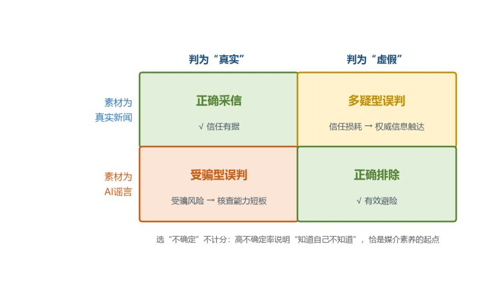
多疑本身也是一种判断失效，而且后果更隐蔽。它会削弱对公共信息的信任基础，遇到突发事件时，只怀疑、不求证的心态容易被谣言反向利用。媒介素养并不等于凡事存疑。把权威渠道发布的真实信息判成造假，和轻信谣言一样要付出代价。教育的目标应当是分级信任，而不是培养普遍的怀疑。
把“不确定”单独拎出来看，可以得到一个更细致的判断：816次判断中有236次（28.92%）选择了“不确定”，其余580次明确作答中有395次判对，明确作答的条件正确率为68.10%。这意味着学生并非完全无从下手，但68.10%只描述“已经作答的题目”，不能直接换算为整体辨识能力。236次不确定占全部421次未得分的56%，是最大的单一失分来源，短板更接近“不会判断、不敢下结论”，而不是全无判断力。这一结果与后文“高自信、低辨识”并不冲突：自信来自使用的熟练，犹豫来自核查方法的缺位，两者可以并存于同一个人身上。
5、自评与实测：自评均分3.7，高自信与低辨识并存
自我评估与实测落在两个方向上：自评辨识能力均分3.7，52.94%的受访者自认强于身边同学（明显更强10.78%、略强一些42.16%），对识别AI内容的信心均分也有3.71。实测正确率却只有48.41%，与真、假二选一猜测的50%基线接近，“高自信、低辨识”的组合相当清楚。
更值得注意的是个体层面的关系。把Q24的自评辨识能力与实测正确率逐人对照，两者的Spearman相关系数只有0.09（该系数在-1到1之间，越接近1表示两者越一致，0表示几乎无关联；p=0.36，95%置信区间约-0.11至0.28），未发现关联。自评高的人并不比自评低的人判得更准。自评4分及以上的69人中有28人（40.58%）实测正确率不足50%，自评3分及以下的33人中也有10人判对5题及以上。真正的问题不只是“高估了多少”。
自评本身无法提供有效信号，学生缺的是一面能照见自己的镜子。
自评与实测的落差本身就可以变成教学资源。先让学生自评，再当堂公布实测成绩，认知落差自己会说话。
6、群体差异：未见稳定的群体优势
分组比较的结果与直觉预期不同。含性别与上网时长分组在内，各组平均正确率在33.93%—62.50%之间浮动，但无论按年级、专业、性别还是上网时长划分，组间差异都未通过置换检验（一种不依赖分布假设的分组差异检验方法；p值依次为0.75、0.17、0.59、0.32）。在102份样本的精度下，没有证据表明某一类学生系统性地更强（见表3；差值系与总体48.41%之差，按整数判对次数精算，平均判对为四舍五入显示值；小样本组不足10人）；以下分组与依据比较均属探索性分析，未作多重比较校正。年级上大二最高（51.89%）、大三最低（44.76%）。专业上人文社科类62.50%看似突出，但该组仅15人，设计艺术类与大一各只有4人，低值同样不足以下结论。
| 维度 | 组别 | 人数 | 平均判对（题） | 正确率 | 差值 |
|---|---|---|---|---|---|
| 年级 | 大一 | 4 | 3.75 | 46.88% | -1.53 |
| 大二 | 33 | 4.15 | 51.89% | +3.49 | |
| 大三 | 31 | 3.58 | 44.76% | -3.65 | |
| 大四及以上 | 34 | 3.88 | 48.53% | +0.12 | |
| 专业类别 | 电子信息类 | 17 | 3.88 | 48.53% | +0.12 |
| 其他理工类 | 36 | 3.69 | 46.18% | -2.23 | |
| 经管类 | 30 | 3.67 | 45.83% | -2.57 | |
| 人文社科类 | 15 | 5.00 | 62.50% | +14.09 | |
| 设计艺术类 | 4 | 2.75 | 34.38% | -14.03 |
性别与上网时长的差异同样在噪声范围内：男生50.00%、女生47.20%；上网时长呈“先升后降”，5—8小时组最高（52.03%）、2小时以内组最低（33.93%），但两端样本仅7人与9人，不足以支持“越用越会辨”的推断。
另有两组变量此前未展开（见附表7）。按AI工具使用频率分组，几乎每天使用者31人、正确率53.63%，每周数次38人、51.64%，每周一两次、偶尔与基本不用合并的33人、39.77%，三组呈梯度；整体置换检验p=0.055，处在边缘；把前两组并为“每周数次及以上”与其余相比，52.54%对39.77%，相差12.77个百分点，p=0.020。这看起来支持“用得多就会辨”，但不宜这样读：高频组里把“内容是否符合常识”列为判断依据的占56.5%，低频组只有27.3%，差距的主要来源仍然是方法，而不是使用本身。按是否遭遇过AI换脸、拟声诈骗分组，本人或身边遭遇过的42人正确率48.21%，未遭遇的60人48.54%，几乎完全重合（p=0.96），受害经历并没有转化为辨识能力。两组分析均属探索性，分组后样本偏小，结论只作线索。
7、判断依据：方法比人群更能解释差异（探索性）
判断依据上，受访者最常依据来源是否权威，但真正到官方媒体或政府网站核对的比例低于看评论区的比例（见图10），“知道该看来源”与“真的去核对”之间还隔着一段距离。
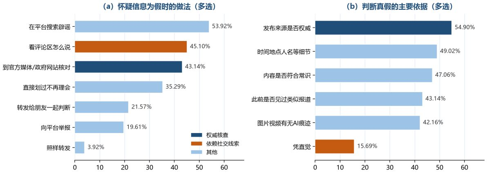
在本样本中，与正确率关系最稳定的是判断方式。受访者自陈的依据与实测正确率呈现出清晰分野（见表4）：依赖“内容是否符合常识”“发布来源是否权威”“图片、视频有没有AI痕迹”的，正确率分别比不依赖者高13.83、13.43与11.80个百分点；而依赖“此前是否见过类似报道”的，反而低6.19个百分点（按816次判断作近似检验，未校正个体内相关，前三项z值在3.3至4.0之间，“见过类似报道”一项z≈-1.8，未达显著）。需要说明的是，“图片、视频有没有AI痕迹”一项对纯文字素材本不适用，选者正确率偏高更可能反映其核验意识。这一反向关系需要警惕。AI谣言的生成逻辑恰恰是模仿真实报道的题材、句式与信息密度，“见过类似的”所带来的熟悉感，可能来自谣言的重复投放，而不是事实核验。凭直觉者与总体基本持平（50.78%），说明直觉既不必然有害，也不可靠，只是把判断交给了运气。
| 判断依据 | 选择人数 | 选者正确率 | 未选者正确率 | 差值 |
|---|---|---|---|---|
| 内容是否符合常识 | 48 | 55.73% | 41.90% | +13.83 |
| 发布来源是否权威 | 56 | 54.46% | 41.03% | +13.43 |
| 图片、视频有没有AI痕迹 | 43 | 55.23% | 43.43% | +11.80 |
| 时间、地点、人名等细节是否具体 | 50 | 51.50% | 45.43% | +6.07 |
| 此前是否见过类似报道 | 44 | 44.89% | 51.08% | -6.19 |
| 凭直觉 | 16 | 50.78% | 47.97% | +2.81 |
由此可以得出一个有实践含义的判断：在本样本中，辨识能力的短板更接近普遍的方法缺失，而不是某一群体的特征。年级、专业、性别均未检出与误判风险的稳定关联，素养教育也就没有理由只挑所谓“高风险人群”，面向全体才合理。经验型依据会被伪造的熟悉感带偏，课程的重点便不该停在“多留意”“别轻信”，而要落到几个可操作的动作上，具体是查来源、做交叉、看细节、辨情绪，还要懂AI的能力边界。这大概也解释了“提醒注意”式的教育为什么收效有限：它诉诸警觉，而学生缺的是方法。
8、治理态度：重平台、轻自身的责任期待
治理态度上，受访者对平台技术治理的期待最高，个人责任项落在半数以下，学校开设课程的支持率在七项正向陈述中最低，治理期待呈现出重平台、轻自身的倾向（同意率排序见图11）。
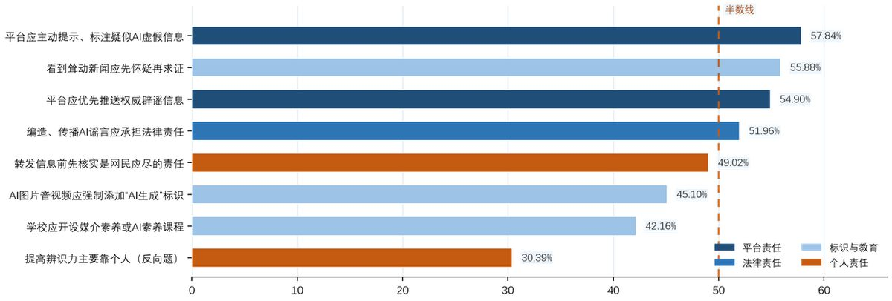
注：同意率=非常同意+比较同意；第八项反向题不参与排序；七项正向题中，学校开课最低。
9、开放题作答：学生并不拒绝被教育，拒绝的是被说教
问卷末题请受访者“如果只能向学校提一条建议”，共收到49条有效作答，其余为空白、无效字符或与问题无关的内容。按主题归类，提到“课程”“讲座”“培训”的17条，提到“案例”“实操”“演示”的12条，提到“宣传”“科普”“推送”的13条，提到“权威渠道”“监管”“追溯源头”的7条，四类互不重叠，合计49条。
这些文字比统计表更能说明问题。例如“在通识课里增加信息核验实操训练，演示如何溯源、查证网络信息。”还有“希望学校开设媒介素养或AI素养相关的课程和讲座，结合真实案例教大家识别AI换脸、AI合成图片和假新闻，再教一些到权威平台核实信息的方法，最好多做实操演练，让同学们在转发前养成先核实的习惯。”这一条把课程内容、教学方式与行为目标讲得很完整，几乎是一份现成的课程大纲。也有更简短的表达：“讲解案例，分析特征，进行模拟”“定期推送AI虚假信息典型案例”“还是要追溯源头”，以及一条六个字、却把态度说尽的“拒绝以讹传讹”。
这些建议与治理态度数据之间存在反差。在同一份问卷里，“学校应开设媒介素养或AI素养相关课程、讲座”的同意率只有42.16%，是七项正向陈述中最低的一项。而到了开放题，课程与训练却成了最集中的诉求。两处结果未必矛盾：前者问的是“该由谁来做”，学生的答案偏向平台；后者问的是“你希望学校做什么”，答案立刻变得具体。这提示思政课该怎么切入。与其反复宣讲责任，不如先给出方法。学生对方便、管用的东西并不排斥，抵触的往往是“被教育”的姿态。
这层反差还可以再往里看一层。学生在“责任归谁”上把担子推给平台与监管，在“我该怎么办”上又迫切想要可上手的训练，两种回答并存，说明他们并不否认学校该管，只是不认为说教有用。责任外推与实操渴求看似矛盾，其实是同一种心态的两面：对抽象的劝诫关闭，对具体的方法敞开。这对后文学校层面的对策是硬约束。课程要成立，先得回答“学了能立刻用吗”。
四、调查结论
1、主要发现
AI使用普及与辨识能力明显不匹配。用过AI工具的受访者占99.02%，辨识测试总体正确率只有48.41%，与二选一的50%基线接近。会用AI与会辨真伪是两种能力，AI技能培训替代不了媒介素养教育。580次明确作答的条件正确率为68.10%，说明短板更多落在“不敢判、不会核”，而不是“全无判断力”，教学因此有了明确着力点：先让学生敢判，再教怎么核。
自评辨识能力与实测水平之间不是“偏高”那么简单，而是几乎脱钩。自评均分3.7、52.94%的受访者自认强于同学，自评与实测的相关系数却只有0.09，自评高的人并不判得更准。这意味着“提醒注意”式的教育连靶子都找不到。有效的做法是让人先看见自己的实测结果。先自评、再做测试、后看答案，这种体验式设计在思政课堂上很容易复制。
学生的责任认知偏向平台一端：平台治理类陈述的同意率高于个人责任项，学校开课的支持率最低。个人自律与平台治理需要同步推进，只讲一头都不够。
“反向风险”已有现实注脚：真实条目被判为虚假的，比虚假条目被判为真实的还多，但差距未达显著，多疑与轻信大致相当。教育目标是建立分级信任，而不是教人怀疑一切。
本样本中更应关注的是方法差异，而不是群体差异。年级、专业、性别与日均上网时长均未检出与辨识水平的稳定关联，判断依据则与正确率相关：用常识、来源作依据的判得更准，靠“见过类似报道”的反而更差。这仍是横断面相关，能否通过训练提高正确率，需要教学实验检验。由此，教学方向也清楚了。面向全体，教方法，不要指望经验攒够了自然就会辨。
2、结论的边界
总体上，“高使用、低辨识、信心与能力脱钩、方法重于经验”这一组判断在数据内部是自洽的，也足以为一门课的改进提供依据，但有三点边界需要说明：样本是线上便利样本，覆盖26个省级行政区而浙江仅占3.92%；测试素材限于8条文字，未覆盖图片与音视频；依据与正确率来自同一次横断面调查，不能直接解释为因果。具体的限制说明与改进方向见第六节。
五、对策建议
1、个人层面：养成“先核后信、先核后转”的习惯
把信息辨识落实成五个动作（见图12）。一看来源是否权威，警惕无出处截图与“网传”字样；二做交叉验证，到权威媒体和中国互联网联合辟谣平台等多源核对；三查细节，时间、地点、数字是否自洽，图片可以反向搜图；四辨情绪，对耸动的标题保持警觉，情绪化正是AI谣言的典型配方；五懂AI的能力边界，视频通话里的长相和声音都可能被伪造，涉及转账应挂断后回拨已知号码，或通过第二渠道确认；要求对方做张嘴、挥手等动作只能作辅助，不能当作验真依据。说到底是不做虚假信息的制作者，也不做无意识的传播者。核查要变成默认动作：日常信息走完前三步即可；凡涉及金钱、健康、公共安全或准备转发，五个动作都要走完，尤其要按第五步回拨已知号码核验。几十秒的核查成本，挡下的可能是财产损失与信用透支。本次调查中，认同“转发信息前先核实是网民应尽的责任”的受访者不足半数（49.02%），“第一责任人”意识仍有培养空间。
还有一层分寸要把握：核查的目的是分级信任，不是怀疑一切。拿不准的时候，恰当的做法是“存疑、不转”，而不是直接判定为假。把真实消息当作谣言，和轻信谣言一样会制造混乱。分得清“待核实”与“已判假”，才算真正掌握了方法。
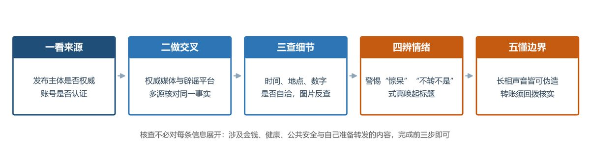
2、学校层面：把AI素养教育融入思政课与新生教育
思政课把真实辟谣案例引入课堂，组织“真假新闻辨识”限时演练与专题辩论，让网络道德教育从“讲道理”走向“练本领”；依托学校电子信息学科优势，在AI通识课程中增设“AI内容辨识”模块，讲清生成原理与破绽规律；把信息甄别纳入新生教育与反诈宣传；支持学生媒体与社团开展辟谣科普，营造朋辈教育氛围。课程上可模块化推进：认知模块讲清AI生成原理与常见破绽（光影矛盾、口型不同步、音色机械感），同时说明这些只是旧模型的常见瑕疵，不能当通则，判断仍要回到来源与交叉验证；技能模块训练搜索核查与反向搜图，实践模块组织辨识竞赛与辟谣创作，把“知道”变成“做到”。有条件时与属地网信部门、公安反诈中心联动，把一线案例请进课堂。网络文明不是抽象口号，它就落在每一次转发的取舍里。把“爱国、敬业、诚信、友善”落到“不造谣、不传谣、先核后转”这几个动作上，思政课正好有用武之地。本次调查显示，受访者对学校开设相关课程的支持率在七项正向陈述中最低（42.16%），课程设计要避免说教，把辨识演练做成学生能感受到用处的实战训练。
具体到课堂，结合第五章网络生活的道德要求，可以拿出15分钟做一次随堂实操：先让学生给自己的辨识能力打分，再当堂完成3道AI虚假信息判断题，随后公布参考答案与依据，最后讲快速核查的方法。自评与实测的落差当场呈现，比任何说教都直观；学生带着“我居然错了”的体验听方法，接受度完全不同。这套流程不占课时、不需要设备，一次课就能落地。
3、平台层面：落实标识义务，健全辟谣机制
严格落实《人工智能生成合成内容标识办法》的显式与隐式标识义务，还要保证标识在转发链条里不被剥离。截图一转，标识常常就没了。对疑似AI虚假信息，及时标注、限流，把权威辟谣推到前面，缩短从“发现”到“辟谣”的时间差。MCN机构要单独治理，“批量造谣—流量变现”这条利益链不斩断，前面的措施都会被稀释。举报入口要做得更显眼，一键可达。技术上可在平台侧留存来源凭证，配合鲁棒水印和发布链路记录提高溯源能力；截图会剥离元数据，不能承诺转发后仍可识别。机制上不妨试试“辟谣紧随原谣言推送”，让看过谣言的人最大概率看到澄清。
4、法治层面：依法惩治与教育预防并重
形成清晰的法律阶梯：情节较轻的，依据新修订《治安管理处罚法》第二十九条处拘留或者罚款。编造虚假的险情、疫情、灾情、警情并在信息网络传播、严重扰乱社会秩序的，依照《刑法》第二百九十一条之一追究刑事责任。生成合成服务提供者还须履行及时处置、内容标识等义务。预防教育可以借庭审直播、以案释法、法治讲座来做，让学生直观看到“随手一转”的法律边界。三类处置也要接得上：行政处罚、平台处置、刑事追责之间不能留空档，避免“以罚代刑”或“一删了之”。对不明真相的转发者以教育警示为主，对组织化、牟利的造谣团伙依法从严。
5、社会协同层面：构建多元治理共同体
净化网络信息生态，靠任何单一主体都办不到。政府出规则、抓执法，平台管技术和分发，学校做素养教育，家庭负责日常提醒，媒体守专业底线，网民自己做到“先核后转”。六方各管一段，接起来才有“不敢造、不能传、不想信”的效果（见图13）。大学生在这个共同体里既是受益者，也是建设者。管好自己的每一次转发，参加一次辟谣科普，提醒家人防范AI诈骗，都是力所能及的事。
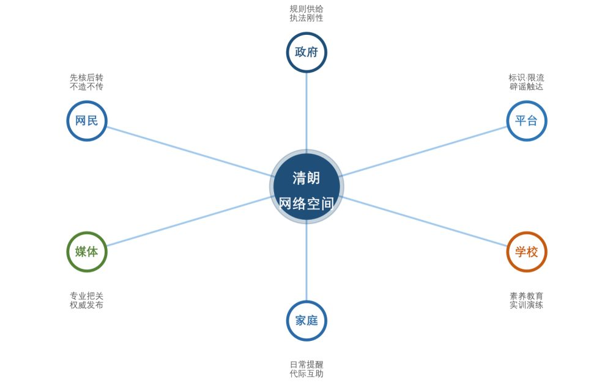
六、研究局限
本报告的结论受三方面限制。其一是样本。102份问卷经线上互填渠道扩散，覆盖26个省级行政区，浙江仅占3.92%，多数省份不足5人，它既不等于某一所高校的学生总体，也不足以支撑校际比较；非概率抽样带来的自选择偏差无法估计。
其二是统计精度。分组后部分组不足20人，第三章第六节多数分组未检出显著差异，这受制于统计功效，并不等于确证无差异，人文社科类的高值与设计艺术类的低值都可能来自抽样波动。
其三是测量本身。辨识测试只有8条文字素材，未涵盖AI图片、音视频等更难辨识的形态，题材也偏重政策、金融与企业信息。这一点值得展开：八条素材全部是文字类谣言，而现实中危害更大的恰恰是视觉与听觉伪造。AI换脸冒充亲友、AI合成图片伪造现场、AI拟声模仿求救，这类内容调动的是“眼见为实”的本能，欺骗性远高于文本。只用文字测试，等于把难度调低了一档。本调研的48.41%更可能是上限而非下限，真实场景中的综合辨识水平只会更低。另有一层是命题：虽按题材尽量配对，真实素材仍集中在AI产业与政策主题，虚假素材多在民生与金融，存在“题材约等于真假”的元线索；附录B的来源标签为整理稿排版所加，作答以问卷星原始题面为准；若原始题面同样带有来源标签，也可能成为作答线索，本报告未做敏感性分析，48.41%存在被高估的可能。后续调研应把图片、短视频与语音素材纳入测试，按题材与媒介形态分层报告。
此外，全部样本的作答时长中位数为116秒，部分问卷投入度不足，会使测试结果向随机水平靠拢。自评与实测同时采集，也可能产生一致性压力。判断依据与正确率来自同一次横断面调查，相关关系不能直接解释为因果；分组与依据比较未作多重比较校正，相关结果宜视为探索性发现。后续研究可按概率抽样设计扩大样本，并结合平台真实辟谣数据开展追踪分析。
结语
“眼见”未必为实，这是生成式AI时代每个人都得面对的现实。102份问卷留下一组数字。用过AI工具的受访者占99.02%，辨识测试的正确率只有48.41%。高使用、低辨识并存，正是教育要填的那一段。提升甄别能力首先是自我保护，其次才是网络文明建设者的担当。技术能不能向善，取决于人还保不保有分辨力。争做“笃学力行、守正求新”的新时代弄潮儿，既要敢闯技术前沿，也要守住真实与理性的底线。愿“先核后转”从一个提醒，变成我们共同的习惯。
调研小组反思
问卷里的八道题我们先各自做了一遍，起初都觉得不难。可把答案逐条对过，错得最多的恰恰是把真新闻当成了AI造假。整理数据时看到“真新闻被误判的比假消息被误判的还多”，才明白那几道错判，正落在真实条目24.51%的误判里。原来最容易犯的错不是轻信，而是把警惕变成习惯之后，连真的也不敢信。
结合《思想道德与法治》第五章的教学内容看，网络文明自律是公民道德建设的重要内容：网络空间不是法外之地，文明上网、理性表达既是道德要求，也是法律底线。我们原先把它理解成“不传谣”三个字，做完这次调查才发现，不传谣的前提是能分辨，而分辨靠的不是态度，是方法：查来源、做交叉、看细节、辨情绪，还要懂AI的能力边界。自律因此不只是“忍住不转”，更是“有本事判断该不该转”。这几条我们如今每次转发前都会走一遍，也算这份作业留给我们自己的一点改变。
参考文献
- 新华网. 我国生成式人工智能用户规模达5.15亿[EB/OL]. (2025-10-20)[2026-11-02]. https://www.xinhuanet.com/tech/20251020/c7c8f6c858c249e2bb69515f40eeab8b/c.html.
- 中国网信网. 利用AI炮制虚假信息 严重误导公众干扰秩序 多部门联动整治谣言乱象[EB/OL]. (2026-06-05)[2026-11-02]. https://www.cac.gov.cn/2026-06/05/c_1782399706641180.htm.
- 中国互联网联合辟谣平台. 为什么我们要警惕“AI生成谣言”？[EB/OL]. (2025-03-10)[2026-11-02]. https://www.piyao.org.cn/20250310/f818ce7d3c274a5ca97c3f8c4bf08244/c.html.
- 新京报. 10分钟被骗430万，被AI诈骗的不止老年人[EB/OL]. (2025-03-14)[2026-11-02]. https://www.bjnews.com.cn/detail/1741919527129116.html.
- 国家互联网信息办公室, 工业和信息化部, 公安部, 等. 人工智能生成合成内容标识办法[Z/OL]. (2025-03-14)[2026-11-02]. https://www.cac.gov.cn/2025-03/14/c_1743654684782215.htm.
- 全国人民代表大会常务委员会. 中华人民共和国治安管理处罚法[Z]. 2025年修订本, 2026-01-01施行.
- 全国人民代表大会常务委员会. 中华人民共和国刑法（第二百九十一条之一）[Z]. 2015年《中华人民共和国刑法修正案（九）》增设.
- 北京大学网络安全和信息化委员会办公室. 大学生生成式人工智能风险意识调研[EB/OL]. (2024-11-12)[2026-11-02]. https://ocac.pku.edu.cn/wxdt/xwdt/1112oi2020162668.htm.
- 中国青年报. 99.2%的受访大学生使用AI，受访者“有事问AI”超过“问搜索引擎”[EB/OL]. (2025-09-22)[2026-11-02]. 中国青年网转载. https://tech.youth.cn/wztt/202509/t20250922_16251332.htm.
- 王欣怡, 贺明华. ChatGPT类生成式人工智能对大学生媒介素养影响研究——以安徽省高校大学生为例[J]. 新闻世界, 2024(10): 59-62.
- 刘彩娥, 韩丽风. AIGC背景下高校信息素养教育的发展[J]. 大学图书馆学报, 2024, 42(2): 46-51.
附录A 调查问卷题目与选项
问卷共29题，其中Q27含8项态度陈述；下列按原题顺序列出题干与选项，Q15—Q22为八条真假辨识测试，材料整理稿、判定与依据见附录B。
Q1 您的年级是？（单选） 选项：大一/大二/大三/大四及以上
Q2 您的专业类别是？（单选） 选项：电子信息类/其他理工类/经管类/人文社科类/设计艺术类
Q3 您的性别是？（单选） 选项：男/女
Q4 您平均每天上网（含使用手机）的时长约为？（单选） 选项：2小时以内/2—5小时/5—8小时/8小时以上
Q5 您日常获取新闻信息的主要渠道是？（多选） 选项：微信朋友圈或群聊/抖音、快手等短视频平台/微博、小红书等社交平台/新闻客户端或官方网站/B站、知乎等社区/亲友口头转述/其他
Q6 您使用过下列哪些AI工具？（多选） 选项：DeepSeek（深度求索）/豆包/通义千问、文心一言/Kimi/ChatGPT等境外工具/AI绘图、AI音视频生成工具/其他/从未使用过
Q7 您使用AI工具的频率是？（单选） 选项：几乎每天/每周数次/每周一两次/偶尔使用/基本不用
Q8 您使用AI工具的主要用途是？（多选） 选项：查资料、找文献/写作润色/翻译/编程或数据处理/生成图片、音视频/娱乐聊天/其他
Q9 您是否用AI生成过文字、图片或音视频并发布到网上？（单选） 选项：经常这样做/偶尔这样做/只试过一两次/从未有过
Q10 您在网络上遇到疑似AI生成的虚假信息的频率是？（单选） 选项：经常遇到/偶尔遇到/很少遇到/从未遇到
Q11 您是否有过“转发之后才发现是谣言”的经历？（单选） 选项：有过，不止一次/有过一次/没有/记不清
Q12 您或您身边的人是否遭遇过AI换脸、AI拟声类诈骗？（单选） 选项：本人遭遇过/身边人遭遇过/没遭遇过但听说过/完全没听说过
Q13 您通常在哪些类型的内容中遇到疑似AI造假信息？（多选） 选项：社会突发事件/明星八卦与娱乐新闻/健康养生与医疗科普/财经、理财与消费信息/政策法规类消息/校园与身边人事/其他
Q14 当您怀疑一条信息是假的，通常会怎么做？（多选） 选项：直接划过，不再理会/到官方媒体或政府网站核对/在平台上搜索关键词看有没有辟谣/看评论区其他人怎么说/转发给同学朋友一起判断/向平台举报/照样转发，提醒别人注意
Q15—Q22 八条真假辨识测试素材（单选：真实/虚假/不确定） 选项：素材内容、参考答案与依据来源见附录B
Q23 您判断上面这些信息真假时，主要依据是什么？（多选） 选项：内容是否符合常识/发布来源是否权威/时间、地点、人名等细节是否具体/此前是否见过类似报道/图片、视频有没有AI痕迹/凭直觉/说不清
Q24 总体而言，您认为自己辨别网络信息真假的能力如何？（量表题，1=很弱，5=很强） 选项：1/2/3/4/5
Q25 与身边同学相比，您的信息辨识能力如何？（单选） 选项：明显更强/略强一些/差不多/略弱一些/明显更弱
Q26 您对自己识别AI生成内容的能力有多大信心？（量表题，1=完全没有信心，5=非常有信心） 选项：1/2/3/4/5
Q27 请根据真实看法对下列说法逐条评价（非常同意/比较同意/一般/不太同意/很不同意） 待评语句：①AI生成的图片、音视频应强制添加“AI生成”标识；②网络平台应对疑似AI虚假信息主动提示、标注；③编造、传播AI谣言应当承担法律责任；④转发信息前先核实是网民应尽的责任；⑤学校应开设媒介素养或AI素养相关课程、讲座；⑥平台应优先推送权威辟谣信息；⑦看到“有图有真相”的耸动新闻，应先怀疑再求证；⑧提高信息辨识能力主要靠个人，与平台、学校关系不大
Q28 您平均每周主动核实可疑信息的时间约为多少分钟？（填空） 作答要求：请填写阿拉伯数字
Q29 如果只能向学校提一条建议，您希望学校在提升学生信息辨识能力方面做什么？（填空） 作答要求：开放作答
附录B 辨识测试素材与参考答案
八条素材均选自2024—2026年的公开报道，其中四条为真实新闻、四条为已被官方辟谣或公安机关查处的AI谣言。评分时每条判断正确记1分，选择“不确定”不计分，总分0—8分；以强制二选一、把“不确定”视为弃权为前提，任意二选一的期望正确率为50%；若按“真实、虚假、不确定”三选一随机猜测，基线应为1/3。命题时真假条目在题材、句式与信息密度上尽量匹配，以降低“题材即线索”的干扰。材料2、4、8在保留核心事实的前提下对表述作了改写。材料前的来源标注系整理稿为区分材料出处所加，作答以问卷星原始题面为准。材料整理稿、判断与主要依据如下。
（一）测试材料（整理稿）
材料1 某媒体报道：2025年初，DeepSeek引发全球关注、宇树机器人登上央视春晚，深度求索、宇树科技、游戏科学等六家杭州科技企业被媒体合称为“杭州六小龙”。
材料2 网传消息：湖南张家界大峡谷玻璃桥发生断裂垮塌，景区已关闭。
材料3 新闻：2025年3月，国家网信办等四部门联合发布《人工智能生成合成内容标识办法》，自当年9月1日起，AI生成的文字、图片、音视频等内容须添加标识。
材料4 网传消息：个人存款计结息“新规”已在全国所有商业银行进入常态化严格执行阶段，储户存款利息将受到影响。
材料5 新闻：《生成式人工智能应用发展报告（2025）》显示，截至2025年6月，我国生成式人工智能用户规模达5.15亿人。
材料6 网传消息：8家新能源车企因“锁电”问题被有关部门约谈并立案，相关名单已在网络流传。
材料7 新闻：2025年6月，中央网信办举报中心联合中国科协科普部发布了《利用AI生成类谣言辟谣典型案例》。
材料8 网传消息：受工作压力和待遇问题影响，多地基层民警出现“离职潮”，部分地区警力缺口明显。
（二）判定与依据来源
| 序号 | 素材要点 | 判断 | 依据来源 |
|---|---|---|---|
| 1 | “杭州六小龙”：DeepSeek、宇树科技、游戏科学等六家杭州科技企业 | 真实 | 2025年初多家媒体报道，企业与事件可公开核验 |
| 2 | 张家界大峡谷玻璃桥“断裂垮塌”、景区关闭 | 虚假 | 中国网信网2026-06-05通报的AI造谣案 |
| 3 | 四部门发布《人工智能生成合成内容标识办法》并施行 | 真实 | 《人工智能生成合成内容标识办法》2025-03-14发布 |
| 4 | 个人存款计结息“新规”在全国银行严格执行 | 虚假 | 中国网信网2026-06-05：央行等从未发布 |
| 5 | 《生成式人工智能应用发展报告（2025）》：AI用户规模5.15亿人 | 真实 | 新华网2025-10-20报道 |
| 6 | 8家新能源车企因“锁电”被约谈，名单在网络流传 | 虚假 | 中国汽车工业协会证伪（中国网信网2026-06-05） |
| 7 | 中央网信办举报中心与中国科协科普部发布《利用AI生成类谣言辟谣典型案例》 | 真实 | 中央网信办举报中心等2025-06发布 |
| 8 | 多地基层民警出现“离职潮”，警力缺口明显 | 虚假 | 公安部2024-04-12公布的10起典型案例 |
附录C 调研实施记录
下表按阶段整理本次调查的实施过程。问卷数据均来自问卷星导出的默认报告，未作二次加权处理。
| 阶段 | 时间 | 主要工作 | 产出 |
|---|---|---|---|
| 准备 | 第1—6教学周（课余） | 确定主题、梳理文献与政策文本、设计问卷、命题并校对八条辨识素材 | 问卷定稿、8条素材与参考答案 |
| 发放 | 实践周10月28日起 | 问卷星线上发放：先经课程群、班级群定向投放，再通过“互填问卷”渠道向其他高校学生扩散 | 回收问卷102份 |
| 清洗 | 实践周中期 | 按作答完整性检查，102份均纳入分析 | 有效问卷102份 |
| 文本 | 与问卷同步 | 第29题开放性建议按主题归类，统计课程、案例、宣传、权威渠道四类诉求 | 49条有效文本 |
| 撰写 | 11月初至11月3日 | 明细数据统计、分组交叉分析与置换检验、图表制作、报告撰写与修改 | 本报告 |
调研过程中还有几处实操困难，如实记录如下。其一是抽样方式带来的偏差：滚雪球依赖社交关系链扩散，同专业、同社团的受访者容易扎堆，样本因此向理工与经管类集中，地域上广东一地就占了近两成。其二是作答投入度参差不齐：作答时长中位数116秒，最短的只有23秒，15份不足40秒，个别问卷在开放题里填入无意义字符，虽按完整性标准全部保留，但投入度差异会影响实测成绩的可比性。其三是素材限制：受时间与能力所限，测试只能选用文字素材，图片与音视频的辨识未能覆盖。其四是发放窗口偏短，实践周内完成回收，未做二次追访。这些困难本身也是课程实践的一部分，记录下来供后续同类调研参考。
附录D 问卷主要题项统计
下列表格为问卷星默认报告的原始统计（n=102），供正文溯源核对。本附录收录使用工具、使用频率、接触频率、核查做法与分组正确率五组统计；Q9 与 Q24—Q26 见正文引述，Q5、Q13、Q28 未在正文展开；Q11、Q12 的经历占比、Q23 与 Q7 的交叉、性别与上网时长分组正确率，以及其余题项明细，均同随原始报表存档。附表4 的“每周一两次”为单档，附表7 的“每周一两次及以下”含该档与“偶尔”“基本不用”两档合并。多选题各选项占比之和大于100%。
| 工具 | 人数 | 占比 |
|---|---|---|
| 豆包 | 83 | 81.37% |
| DeepSeek（深度求索） | 69 | 67.65% |
| 通义千问、文心一言 | 42 | 41.18% |
| ChatGPT等境外工具 | 29 | 28.43% |
| Kimi | 26 | 25.49% |
| AI绘图、AI音视频生成工具 | 16 | 15.69% |
| 其他 | 6 | 5.88% |
| 从未使用过 | 1 | 0.98% |
| 使用频率 | 人数 | 占比 |
|---|---|---|
| 几乎每天 | 31 | 30.39% |
| 每周数次 | 38 | 37.25% |
| 每周一两次 | 21 | 20.59% |
| 偶尔使用 | 11 | 10.78% |
| 基本不用 | 1 | 0.98% |
| 接触频率 | 人数 | 占比 |
|---|---|---|
| 经常遇到 | 30 | 29.41% |
| 偶尔遇到 | 49 | 48.04% |
| 很少遇到 | 17 | 16.67% |
| 从未遇到 | 6 | 5.88% |
| 处理方式 | 人数 | 占比 |
|---|---|---|
| 在平台上搜索关键词看有没有辟谣 | 55 | 53.92% |
| 看评论区其他人怎么说 | 46 | 45.10% |
| 到官方媒体或政府网站核对 | 44 | 43.14% |
| 直接划过，不再理会 | 36 | 35.29% |
| 转发给同学朋友一起判断 | 22 | 21.57% |
| 向平台举报 | 20 | 19.61% |
| 照样转发，提醒别人注意 | 4 | 3.92% |
| 维度 | 组别 | 人数 | 平均判对（题） | 正确率 |
|---|---|---|---|---|
| AI使用频率 | 几乎每天 | 31 | 4.29 | 53.63% |
| 每周数次 | 38 | 4.13 | 51.64% | |
| 每周一两次及以下 | 33 | 3.18 | 39.77% | |
| 诈骗遭遇 | 本人或身边遭遇过 | 42 | 3.86 | 48.21% |
| 未遭遇 | 60 | 3.88 | 48.54% |